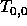
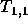
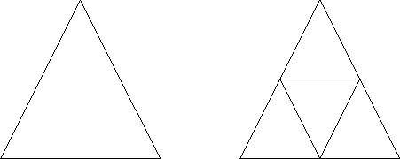
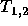
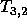
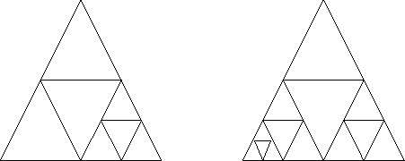
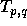
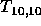
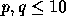

| Modern Art |
The famous painter Mel Borp is working on a brilliant series of paintings that introduce a new experimental style of Modern Art. At first glance, these paintings look deceptively simple, since they consist only of triangles of different sizes that seem to be stacked on top of each other. Painting these works, however, takes an astonishing amount of consideration, calculation, and precision since all triangles are painted without taking the brush off the canvas. How exactly Mel paints his works is a well-kept secret.
Recently, he started on the first painting of his new series. It was a single triangle, titled  . After that, he created  , the basis for his other works (see Figure 1).

Figure: Early work: (left) and (right).
Then he decided to take his experimenting one step further, and he painted  and  . Compare Figure 1 and Figure 2 to fully appreciate the remarkable progression in his work.

Figure: Advanced work: (left) and (right).
Note that the shape of the painting can be deduced from its title,  , as follows:
The triangles of a painting look all the same (each triangle is an isosceles triangle with two sides of the same length), but their height and width depend on the size of the canvas Mel used.
Mel wanted to end the series with  , the most complex painting he thought he would be able to paint. But no matter how many times he tried, he could not get it right. Now he is desperate, and he hopes you can help him by writing a program that prints, in order, the starting and ending coordinates of the lines Mel has to paint. Of course, you will need to know how Mel paints his works, so we will now reveal his secret technique.
As an example, take a look at (see Figure 3):
Mel always starts at the top of the top triangle, drawing a line straight to the lower-left corner of the lower left triangle (in this example, 1-2), continuing with a line to the lower-right corner of that triangle (in this example, 2-3). Next, he works his way up by drawing a line to the top of that triangle (in this example, 3-4). Now he has either reached the starting point again (finishing yet another masterpiece) or he has reached the lower-left corner of another triangle (in this example, 1-4-5). In the latter case, he continues by drawing the bottom line of that triangle (4-5) and after that he starts working on the triangle or triangles that is or are located underneath the lower-right corner of that triangle, in the same way. So he continues with (5-3), (3-6), (6-7), (7-8), (8-6), (6-9), and (9-1) as the finishing touch.
The first line of the input contains the number of test cases. Each test case consists of one line containing four non-negative integers p, q, x, and y, separated by spaces. is the title of the painting and (x,y) are the coordinates of the top of the top triangle. Further,  and x,y < 32768. All triangles have a nonzero area.
For every test case, the output contains the pairs of (x,y) integer coordinates of the starting and ending points of all lines Mel has to draw for the painting in the right order, in the format
followed by a newline. The output for each test case must be followed by an empty line.
2 0 0 1 1 1 2 512 1024
(1,1)(0,0) (0,0)(2,0) (2,0)(1,1) (512,1024)(0,0) (0,0)(512,0) (512,0)(256,512) (256,512)(768,512) (768,512)(512,0) (512,0)(768,0) (768,0)(640,256) (640,256)(896,256) (896,256)(768,0) (768,0)(1024,0) (1024,0)(512,1024)